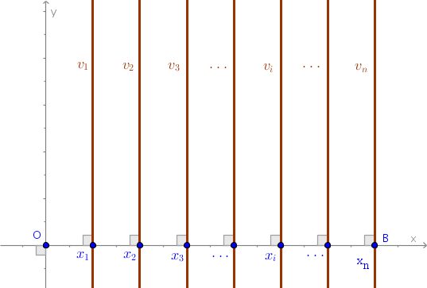
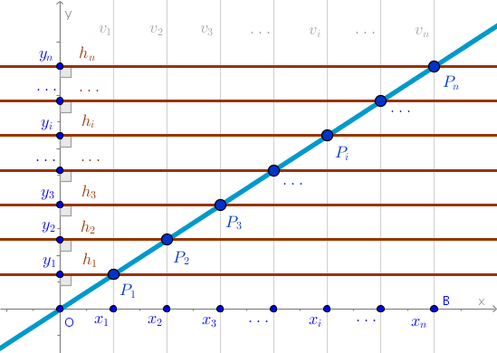
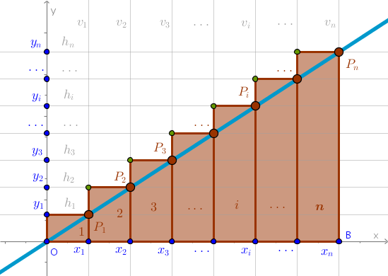
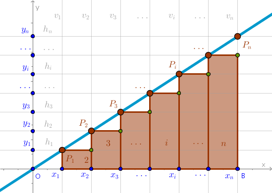
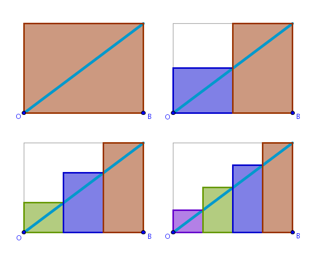

The pages that follow are a demonstration of how the Division basic approach may be applied to the problem of calculating the square areas under certain two-dimensional curves without explicit integration.
Problem
Assume that we know that:
- \(\pi = 3.14\)
- the square area of a rectangle with sides \(a\) and \(b\) is \(a \times b\)
- the perimeter of a circle with a radius \(r\) is \(2\pi r\)
- the square area of a circle with a radius \(r\) is \(\pi r^2\)
$$\sum_{i=1}^n i = \frac {n(n+1)}{2}$$ $$\sum_{i=1}^n i^2 = \frac {n(n+1)(2n+1)}{6}$$ $$\sum_{i=1}^n i^3 = \frac {n^2(n+1)^2}{4}$$
(a uniform approach to computing the above sums is discussed in Scope Expansion section)
Find:
- the square area \(A\) of a plane region delineated by the graph of a given function, the \(x\)-axis and, where appropriate, the \(y\)-axis and/or a perpendicular to \(Ox\) through an arbitrary point \(B\) on \(Ox\).
Solution Template
Division
The Division basic approach prescribes that we divide a given whole - a two-dimensional region under a graph of a function - into an arbitrary number of primitive parts whose square areas we do know how to compute. Let us name these primitive parts Riemann Rectangles or just rectangles.
We observe that the knowledge of how to compute the square area of a primitive part does inflict a certain cost on this type of solution - most of the time the plane region tiled over by the primitive parts and the plane region whose square area is sought after will not coincide exactly.
Construction
We shall construct the primitive parts as follows:
1) Start with and work in the first quadrant of a two-dimensional rectangular \(yOx\) coordinate system.
2) It is not necessary but to demonstrate the mechanics of the Division basic approach with as modest prerequisits budget as possible divide the given line segment \(OB = L\) on \(Ox\) into \(n\) line segments of equal length:
$$Ox_1 = x_1x_2 = x_2x_3 = \dots = x_{i-1}x_i = \dots = x_{n-1}x_n$$ $$x_{i-1}x_i = \Delta x = \frac {L}{n}$$ $$x_i = \Delta x \times i = \frac {L}{n} \times i, \quad i \in [1, n]$$The above line segments of equal length will be used as the bases of primitive rectangles.
3) Construct \(n\) perpendiculars to \(Ox\) - one \(v_i\) perpendicular through the corresponding \(x_i\):
The corresponding portions of the above perpendiculars \(v_i\) will be used as the sides of primitive rectangles.
4) Since the graph of a function (\(y = mx, m > 0\), in the drawing below) must pass a vertical line test, each of the perpendiculars \(v_i\) will intersect the graph of a given function at a certain point \(P_i\).
Construct \(n\) perpendiculars to \(Oy\) - one \(h_i\) perpendicular through the corresponding intersection point \(P_i\):
The corresponding portions of the above perpendiculars \(h_i\) will be used as the roofs of primitive rectangles.
5.1) At this stage three of four vertexes of a primitive rectangle have been located.
The remaining forth vertex may be constructed at the intersection of \(h_i\) with either \(v_{i-1}\) or \(v_{i+1}\).
Constructing the remaining vertex at the intersection of \(h_i\) and \(v_{i-1}\) effectively makes each \(P_i\) an upper right vertex of the corresponding primitive rectangle:
Let us name the above primitive parts Right Riemann Rectangles and let us name the sum of their square areas a Right Riemann Sum.
We observe that if we number our primitive rectangles in a left to right fashion assigning the ordinal number of \(1\) to the left-most rectangle then for Right Riemann Sums the height of the \(i-\)th primitive rectangle will be equal to the value of the corresponding function at the point \(x_i\):
$$y_i = f(x_i)$$5.2) Constructing the remaining vertex at the intersection of \(h_i\) and \(v_{i+1}\) effectively makes each \(P_i\) an upper left vertex of the corresponding primitive rectangle:
Let us name the above primitive parts Left Riemann Rectangles and let us name the sum of their square areas a Left Riemann Sum.
We observe that for Left Riemann Sums the height of the \(i-\)th primitive rectangle will be equal to the value of the corresponding function at the previous point \(x_{i-1}\):
$$y_i = f(x_{i-1})$$There exist several other ways to construct primitive rectangles which differ from one another in a way their heights are chosen. For example, we may choose the height of a primitive rectangle to cut the line segments \(x_{i-1}x_i\) exactly in half. We may name these rectangles Middle Riemann and the sum of their square areas Middle Riemann Sum.
It is also possible to choose the least upper bound (supremum) of a given function for the value of \(y_i\) for the \(i-\)th primitive rectangle. The sum of square areas of these Upper Riemann Rectangles is called the Upper Riemann Sum, \(U\). If the value of \(y_i\) is chosen to be the greatest lower bound of a function (infimum) then the sum of square areas of these Lower Riemann Rectangles is called the Lower Riemann Sum, \(L\):
$$L \leqslant A \leqslant U$$However, since all the functions that we will examine are monotonically increasing and/or monotonically decreasing in the first quadrant it is enough to compute the left and the right sums.
Iterations
To solve the problem posed by the above inequality we will apply the following iterative process to each primitive part that currently covers the plane region in question:
- reduce the magnitude of one dimension of an existing primitive part (we may reduce the width of a part, for example)
- the above dimension reduction will result in the reduction of the overall area occupied by the given, now smaller, primitive part which will result in a gap around that primitive part
- to cover that gap generate a new appropriately sized and positioned primitive part which will become an "existing" part during the next iteration:
- capture the above process mathematically via \(n\) - the number of primitive parts that grows without upper bound:
$$n \to +\infty$$We now anticipate that as \(n\) grows larger and larger the primitive parts delineate the plane region in question more and more precisely which, we hope, means that the magnitudes of the lower and upper sums get closer and closer to the magnitude of the actual square area \(A\) sought after.
If it so happens that in the limiting case of \(n \to +\infty\) the limits of lower and upper sums exist and are equal to each other:
$$\lim_{n \to +\infty}L = \lim_{n \to +\infty}U$$then it is said that the above limit, known also as a Riemann Integral, is the square area sought after and the problem is solved.
While we will be very thorough in the Straight Line section - read it first, once the basic idea of the approach is understood we will forgo the breakdown of a problem and go to calculations right away.